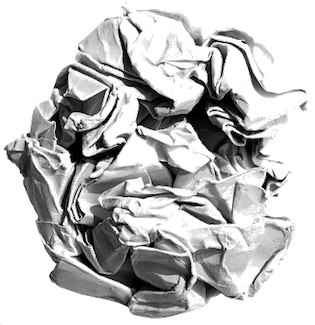

class: center, middle, title-slide .title[ # Market, Space and Infrastructure ] .author[ ### <br>Dr. Kumar Aniket<br>UCL ] .date[ ### <rr>March 2024</rr> ] --- class: title-slide-custom class: center, middle # econversation.github.io --- class: center, middle, inverse # Space # Markets # Infrastructure --- .pull-left[ ## Michel Serres (1995) <img src="images/new/barking_png.png" width="100%" style="display: block; margin: auto;" /> ] .pull-right.tack[ If you take a handkerchief and spread it out in order to iron it, you can see in it certain fixed distances and proximities. If you sketch a circle in one area, you can mark out nearby points and measure far-off distances. Then take the same handkerchief and crumple it, by putting it in your pocket. Two distant points suddenly are close, even superimposed. If, further, you tear it in certain places, two points that were close can become very distant. ] .footnote[ M. Serres with B. Latour, Conversations on Science, Culture, and Time, trans. Roxanne Lapidus. Ann Arbor: University of Michigan Press, 1995, pp. 60–61. ] --- .pull-left[ ## Michel Serres (1995) <img src="images/new/barking_png.png" width="100%" style="display: block; margin: auto;" /> ] .pull-right.tack[ If you take a handkerchief and spread it out in order to iron it, you can see in it certain fixed distances and proximities. .fade[If you sketch a circle in one area, you can mark out nearby points and measure far-off distances. Then take the same handkerchief and crumple it, by putting it in your pocket. Two distant points suddenly are close, even superimposed. If, further, you tear it in certain places, two points that were close can become very distant.] ] .footnote[ M. Serres with B. Latour, Conversations on Science, Culture, and Time, trans. Roxanne Lapidus. Ann Arbor: University of Michigan Press, 1995, pp. 60–61. ] --- .pull-left[ <img src="images/cover4_png.png" width="100%" style="display: block; margin: auto;" /> ] .pull-right.tack[ .fade[If you take a handkerchief and spread it out in order to iron it, you can see in it certain fixed distances and proximities.] If you sketch a circle in one area, you can mark out nearby points and measure far-off distances. Then take the same handkerchief and crumple it, by putting it in your pocket. .fade[Two distant points suddenly are close, even superimposed. If, further, you tear it in certain places, two points that were close can become very distant.] ] .footnote[ M. Serres with B. Latour, Conversations on Science, Culture, and Time, trans. Roxanne Lapidus. Ann Arbor: University of Michigan Press, 1995, pp. 60–61. ] --- .pull-left[ <img src="images/new/rail.jpg" width="100%" style="display: block; margin: auto;" /> linking places through > .emob[high speed railway line] > .emob[Expressways] ] .pull-right.tack[ .fade[If you take a handkerchief and spread it out in order to iron it, you can see in it certain fixed distances and proximities. If you sketch a circle in one area, you can mark out nearby points and measure far-off distances. Then take the same handkerchief and crumple it, by putting it in your pocket.] Two distant points suddenly are close, even superimposed. .fade[If, further, you tear it in certain places, two points that were close can become very distant.] ] .footnote[ M. Serres with B. Latour, Conversations on Science, Culture, and Time, trans. Roxanne Lapidus. Ann Arbor: University of Michigan Press, 1995, pp. 60–61. ] --- .pull-left[ <img src="images/new/prison_fence2.png" width="100%" style="display: block; margin: auto;" /> > .emob[Enclosure movement] > .emob[Political borders] > .emob[high speed railway line] > .emob[Expressways] ] .pull-right.tack[ .fade[If you take a handkerchief and spread it out in order to iron it, you can see in it certain fixed distances and proximities. If you sketch a circle in one area, you can mark out nearby points and measure far-off distances. Then take the same handkerchief and crumple it, by putting it in your pocket. Two distant points suddenly are close, even superimposed.] If, further, you tear it in certain places, two points that were close can become very distant. ] .footnote[ M. Serres with B. Latour, Conversations on Science, Culture, and Time, trans. Roxanne Lapidus. Ann Arbor: University of Michigan Press, 1995, pp. 60–61. ] --- class: antiflash # London Millennium Footbridge .tack.pr.w70.fs80.mygrapha[ <div class="figure" style="text-align: center"> <img src="images/new/millbridge.jpg" alt=" London Millennium Footbridge" width="100%" /> <p class="caption"> London Millennium Footbridge</p> </div> ] --- class: center, inverse # London Millennium Footbridge in 2000 <video width="600"> <source src="images/new/millbridge.mp4" type="video/mp4"> </video> --- class: center,middle,inverse # Rope Bridge <img src="images/new/rope2.png" width="100%" style="display: block; margin: auto;" /> --- class: center,middle,inverse # Space <img src="images/new/mirror2_png.png" width="70%" style="display: block; margin: auto;" /> ### Conceptual Framework <!-- --- --> <!-- class: inverse,center,middle --> <!-- # What is Space? --> --- class: center,middle,antiflash # Lefebvre (1974) .center.tack[ **Humans** produce .emob[space] & the **humans** in turn are produced by .emob[space]. ] .center[**Endogeneity** <br><br> *feedback loop*] .footnote[ Lefebvre, H. (1974). La production de l’espace. Paris: Anthropos. ] --- class: center,middle,antiflash # Conley (2012) .center.tack[ Place is simply .emob[there], while space is .emob[produced] or .emob[invented]. ] .footnote[ Conley, V. A. (2012). Spatial ecologies: Urban sites, state and world-space in french cultural theory (Vol. 21). Liverpool University Press. ] --- .pull-left[ ### Cartesian space <!-- - .emn.fs120[René Descartes] --> .ref.glow[René Descartes] Cartesian coordinate system .emob[Empty] three-dimensional space Physical space that can be occupied by animate and inanimate objects. People who occupy space can't change it ] -- .pull-right[ ### Social Space Space as .emob[experienced by humans] Includes .emob[social relationships] Embeds .emob[power relationships] ] .cfix[] .center.tack[ What is the relationship between .emob[Cartesian space] and .emob[Social space]? ] --- ## Social Space .pull-left[ .ref.glow[Lefebvre (1974)] <!-- Empirical problems in discerning the relationship between human and space due to .emob[endogeneity] --> ] .pull-right[ Physical space is .emob[vacuum] Physical space and social space are .emob[entangled] More complex the place, the more the .emob[signs] are needed Humans develop .emob[formal] and .emob[informal representation] of space in their minds<sup>1</sup> ] <!-- .lpar[ ] --> <!-- .rpar[] --> .cfix[] .footnote[ [1] Norman's conceptual model seems relevant here. ] --- ## Conceptual Model .pull-left[ .ref[Norman (1998)] Computer sciences Coined the term .emob.glow[conceptual model] to describe the bare bones knowledge a person needs to know to use something. ] -- .pull-right[ .center.thebox[ The .emob[rules of usage] should be .emob[congruent] with the object in use. ] .center.thebox[ People know the .emob[conceptual model] of the .empb[rope bridge] but not the .empb[Millennium Footbridge].] ] .footnote[Norman, D. A. (1998). The invisible computer: Why good products can fail, the personal computer is so complex, and information appliances are the solution. MIT press.] --- class: antiflash # .glow[Formal Representation]: Maps .tack.pl.w48.fs80.mygrapha[ <div class="figure" style="text-align: center"> <img src="images/new/London_tube_actual.png" alt="London's actual tube map" width="100%" /> <p class="caption">London's actual tube map</p> </div> ] -- .tack.pr.w48.fs80.mygrapha[ <div class="figure" style="text-align: center"> <img src="images/new/London_tube_map.jpg" alt="London's simplified tube map" width="100%" /> <p class="caption">London's simplified tube map</p> </div> ] --- class: antiflash # .glow[Informal Representation]: Social Rules .tack.pl.w48.fs80.mygrapha[ <div class="figure" style="text-align: center"> <img src="images/new/roundabout.jpg" alt="Roundabout" width="100%" /> <p class="caption">Roundabout</p> </div> ] .tack.pr.w48.fs80.mygrapha[ <div class="figure" style="text-align: center"> <img src="images/new/road.jpg" alt="Traffic in Barcelona" width="100%" /> <p class="caption">Traffic in Barcelona</p> </div> ] --- class: center,middle,antiflash .ref[Ezekiel (1976)] .center.w60.tack[ IRANI RIESTAURANT INSTRUCTIONS Please<br> Do not spit <br> Do not sit more<br> Pay promptly, time is valuable <br> Do not write letter <br> without order refreshment<br> Do not comb,<br> hair is spoiling floor<br> Do not make mischiefs in cabin <br> our waiter is reporting<br> Come again <br> All are welcome whatever caste<br> If not satisfied tell us <br> otherwise tell others<br> GOD IS GREAT ] --- class: center,middle,antiflash .ref[Ezekiel (1976)] .center.w60.tack[ IRANI RIESTAURANT INSTRUCTIONS .fade[Please]<br> .glow[Do not spit]<br> .glow[Do not sit more]<br> .fade[Pay promptly, time is valuable] <br> .fade[Do not write letter ]<br> .fade[ without order refreshment]<br> .fade[Do not comb,]<br> .fade[ hair is spoiling floor]<br> .fade[Do not make mischiefs in cabin] <br> .fade[ our waiter is reporting]<br> .fade[Come again] <br> .fade[All are welcome whatever caste]<br> .fade[If not satisfied tell us] <br> .fade[ otherwise tell others]<br> .fade[GOD IS GREAT] ] --- class: center,middle,antiflash .ref[Ezekiel (1976)] .center.w60.tack[ IRANI RIESTAURANT INSTRUCTIONS .fade[Please]<br> .fade[Do not spit]<br> .fade[Do not sit more]<br> .fade[Pay promptly, time is valuable] <br> .fade[Do not write letter ]<br> .fade[ without order refreshment]<br> .glow[Do not comb,]<br> .glow[ hair is spoiling floor]<br> .fade[Do not make mischiefs in cabin] <br> .fade[ our waiter is reporting]<br> .fade[Come again] <br> .fade[All are welcome whatever caste]<br> .fade[If not satisfied tell us] <br> .fade[ otherwise tell others]<br> .fade[GOD IS GREAT] ] --- class: center,middle,antiflash .ref[Ezekiel (1976)] .center.w60.tack[ IRANI RIESTAURANT INSTRUCTIONS .fade[Please]<br> .fade[Do not spit]<br> .fade[Do not sit more]<br> .fade[Pay promptly, time is valuable] <br> .fade[Do not write letter ]<br> .fade[ without order refreshment]<br> .fade[Do not comb,]<br> .fade[ hair is spoiling floor]<br> .glow[Do not make mischiefs in cabin] <br> .glow[ our waiter is reporting]<br> .fade[Come again] <br> .fade[All are welcome whatever caste]<br> .fade[If not satisfied tell us] <br> .fade[ otherwise tell others]<br> .fade[GOD IS GREAT] ] --- class: center,middle,antiflash .ref[Ezekiel (1976)] .center.w60.tack[ IRANI RIESTAURANT INSTRUCTIONS .fade[Please]<br> .fade[Do not spit]<br> .fade[Do not sit more]<br> .fade[Pay promptly, time is valuable] <br> .fade[Do not write letter ]<br> .fade[ without order refreshment]<br> .fade[Do not comb,]<br> .fade[ hair is spoiling floor]<br> .fade[Do not make mischiefs in cabin] <br> .fade[ our waiter is reporting]<br> .glow[Come again] <br> .glow[All are welcome whatever caste]<br> .fade[If not satisfied tell us] <br> .fade[ otherwise tell others]<br> .glow[GOD IS GREAT] ] --- .footnote[ Ezekiel, N. (1976). Irani restaurant instructions. Journal of South Asian Literature, 11(3/4), 106–106. ] --- class: antiflash # .glow[Informal Representation]: Social Rules .lpar[ A **road** is a .emob[social space] A **restaurant** is a .emob[social space] ] .rpar[ Impossible to disentangle the intangible ".emob.glow[rules of the space]" from the tangible space itself ] .cfix[] .thebox[ .center[ .emob[Social Space] = **Cartesian Space** + **Social Rules** ] ] --- class: center,middle,inverse <img src="images/new/mirror1_png.png" width="80%" style="display: block; margin: auto;" /> --- class: center,middle,inverse # Market ## Kerala Fish Market --- # Coastal Fish Market in Kerala Fish is the staple diet in Kerala, India Kerala has a long coastline with fish markets dotted along the coast Fisherman have a .emob[choice] of which fish market they land their fish in .pull-left[ .emob[Information problem] after the fisherman catch their fish They do not .emob[know] the .emob[price of fish] in each market on a particular day ] .pull-right.tack.mygrapha[ <img src="images/lec3/kerala.jpg" width="100%" style="display: block; margin: auto;" /> ] --- # Kerala Fish Market Jenson (2007) studied of .emob.fs120[15 fish markets] along the 225 km .emob.fs120[Northern coast of Kerala] to understand whether the market for fish was working. .footnote[ Jensen, Robert (2007). The digital provide: Information (technology), market performance, and welfare in the South Indian fisheries sector.” The quarterly journal of economics. ] --- # Kerala Fish Market .fade[Jenson (2007) studied of 15 fish markets along the 225 km Northern coast of Kerala to understand whether the market for fish was working.] <!-- Jenson (2007) studied of .emob.fs120[15 fish markets] along the 225 km .emob.fs120[Northern coast of Kerala] to understand whether the market for fish was working --> - Fisherman had to .emob[choose] the port/market where they would get the best price for their catch - Fish merchants .emob[bought] the fish from the fisherman and sold it to the consumers - If fish merchants already had enough fish on the port they landed, the fisherman would just .emob[jettison] their catch .pull-left[ Fish .emob[prices] were .emob[volatile] and fisherman’s .emob[profits low] ] .pull-right[ due to .emob[wastage] and .emob[ex-post bargaining power] of fish merchants who bought from the fisherman and sold to the consumers ] --- class:top,center <!-- .emob[Market Conditions on 14th January 1997 in Fish Markets in Kerala] --> ### Market Conditions on 14th January 1997 in the Fish Markets .tack.mygraph[ <img src="images/lec3/f0.jpg" width="80%" style="display: block; margin: auto;" /> ] .pull-left[.emob[Badagara]: 11 boats jettisoned their catch due to excess supply] .pull-right[.emob[Chombala]: 15 buyers left unable to purchase fish at any price ] --- class:center,top ### Average market price across markets .emb[Excess supply] .tab[] | .tab[] .emd[Market Clearing] .tab[] | .tab[] .emb[Excess demand] :---:|:---:|:---: .emb[₹ 0] | ₹ 5.9 | .emb[₹ 9.3] .tack.mygraph[ <img src="images/lec3/f0.jpg" width="80%" style="display: block; margin: auto;" /> ] --- class:inverse,middle # Efficiency .pull-left[ ### Vilfredo Pareto .fs120[Italian polymath (1848 – 1923)] Civil engineer Sociologist Economist, Political scientist Philosopher ] .pull-right[ <img src="images/new/pareto.png" width="150%" style="display: block; margin: auto;" /> ] --- ## Pareto Efficiency .tack[ **Pareto efficiency** situations are one where you cannot make anyone better-off without making anyone worse off. ] .center.emgr[**Winners** and **losers** in the society] ## Pareto Improvement .tack[ An intervention that makes some people better off without making anyone worse off is called a **Pareto improvement**. ] .center.emgr[**Winners** but **no losers** in the society] --- class:center ## Sequential roll out of mobile phone coverage .tack.mygrapha[ <img src="images/lec3/f1.png" width="60%" style="display: block; margin: auto;" /> ] --- class:center ## Introduction of mobile phones .tack.mygrapha[ <img src="images/lec3/f2.png" width="70%" style="display: block; margin: auto;" /> ] .pull-left[Sharp decrease in .emob[price] volatility. Reduced .emob[waste] & elimination.] .pull-right[Fisherman's .emob[profits] went up by 8%. Consumer .emob[prices] decreased by 4%] --- # Market Efficiency Introduction of mobile phones made the fish market more efficient .center[i.e., .emob[a Pareto Improvement]] - Reduced waste & elimination - Sharp decrease in price volatility - Fisherman’s profits went up by 8% - Consumer prices decreased by 4% --- class:inverse,middle # Adam Smith .pull-left[ .fs120[Influential thinker (1723 -- 1790)] Economist Philosopher Key figure in Scottish Enlightenment ] .pull-right[ <img src="images/new/adam_smith.png" width="200%" style="display: block; margin: auto;" /> ] --- ## Adam Smith's insight .center.tack.w75[ .center[Well-functioning .emob[markets] are Pareto .emob[efficient]. ] ] .cfix[] .center.w75[ That is *all mutually beneficial trades are undertaken* and no trades than can make someone better off without making anyone worse off are left unexploited.] .cfix[] -- ## Unanswered question .center.tack[ How do the buyers and seller .emob[find] each other? Who .emob[owns] the space where the buyers and sellers meet? ] --- # Co-incidence of location .pull-left[ **Before mobile phones** .emob[Price information] previously **flowed** the through the .emob[physical space] which it .emob[required co-incidence of location] to exchange price information ] .pull-right[ **After mobile phones** price information **flowed** through a .emob[different space] .emob[freed individuals] from .emob[co-incidence of location] ] --- # Co-incidence of location .pull-left[ .fade[Before mobile phones] .fade[Price information previously flowed the through the physical space which ] .fade[it required co-incidence of location to exchange price information] ] .pull-right[ .fade[After mobile phones] .fade[price information flowed through a different space] .fade[freed individuals from co-incidence of location] **Payment systems** free people from co-incidence of location Co-incidence of location remains for **goods** .emob[Markets unlikely to become aspatial] ] --- # The Four Spatial flows .pull-left.tack[ The .emob[flow of information] from the sellers to the buyers about the quality of goods available in the market. ] .pull-right.tack[ The .emob[flow of information] about the market price of the goods ] .cfix[] .pull-left.tack[ The .emob[flow of the actual good] from the seller to the buyer ] .pull-right.tack[ The .emob[flow of money] from the buyer to the seller ] --- # Kerala Fish Market .pull-left[ .tack.w50[ Market ] .tack.w50[ Space ] .tack.w50[ Infrastructure ] ] -- .pull-right[ .tack[ .emkb.fs110[Market-space]<br> .emob[contiguous space] between all potential buyers and sellers through which .emob[price information], .emob[goods] and .emob[money flow]. ] .tack[ .emkb.fs110[Market-place]<br> .emob[location] where the .emob[exchange] of goods and money occurs. ] ] --- # Characteristics of Market-space .pull-right[ .center.tack.w48[ Contiguity ] .center.tack.w48[ non-rival ] .center.tack.w60[ non-excludable ] ] --- # Characteristics of Market-space .pull-left.tack[ .emob[Market-space] is a .emob[public good] ] .pull-right[ .center.tack.w48[ .fade[Contiguity] ] .center.tack.w48[ .fade[non-rival ] ] .center.tack.w60[ .fade[non-excludable] ] ] --- ## Coda .pull-left.tack[ ### Kerala Fish Markets Atypical example because most places are landlocked. ] .pull-right.tack[ Buyer's ability to move across space is determined by the .emob[transport network] > Numerous options in .emob[urban areas] > Limited options in .emob[rural areas] ] --- class: center,middle,inverse <img src="images/new/mirror2a_png.png" width="80%" style="display: block; margin: auto;" /> --- class: center, middle, inverse # Market ## Fulton Fish Market <br> New York City --- layout: true ## Fulton Fish Market --- .tack.mygrapha.fs80[ <div class="figure" style="text-align: center"> <img src="images/fulton/map.jpg" alt="Wholesale fish markets in New York where restauranters buy fish in large quantities" width="75%" /> <p class="caption">Wholesale fish markets in New York where restauranters buy fish in large quantities</p> </div> ] --- .tack.pl.w48.fs80.mygrapha[ <div class="figure" style="text-align: left"> <img src="images/fulton/loading.jpg" alt="Unloading the fish from the boats" width="100%" /> <p class="caption">Unloading the fish from the boats</p> </div> ] .tack.pr.w48.fs80.mygrapha[ <div class="figure" style="text-align: left"> <img src="images/fulton/market.jpg" alt="Fish stalls in the Fulton Market" width="100%" /> <p class="caption">Fish stalls in the Fulton Market</p> </div> ] --- layout: false <!-- .lpar[ ] .rpar[*Wholesale fish markets* where restauranters and buy fish in large quantities] .cfix[] --> <!-- .ref[Graddy (2006)] --> ## Graddy (2006) .tack.pl.w48[ Studied the transactions for .emob[whiting] in Fulton Fish Market in 1995. ] .footnote[ Graddy, K. (2006). Markets: The fulton fish market. Journal of Economic Perspectives, 20(2), 207–220. ] .tack.pr.w60[ Found that .emob[Asian buyers paid 10% less] for the same quality of fish as compared to other white buyers. ] --- ## Power relationships in the Fulton Fish Market .tack.pl.w48.fs90[ Asians buyers were .emob[socially organised] and could .emob[boycott] the sellers that cheated them] .tack.pr.w48.fs90[ Why couldn't new sellers .emob[enter] the market and .emob[compete] with the old sellers ] -- .tack.pr.w60.fs90[ .emob[Mafia] controlled the .emob[parking] in the streets around the market It controlled the .emob[loading] and .emob[unloading] of the fish ] .cfix[] .tack.w75[ Only .emob[sellers] that had a .emob[relationship] with the local .emob[mafia] could sell in the Fulton fish Market] --- class: middle,center .pl.tack.w25[ Market] .pr.tack.w25[ Power] .pl.tack.w25[ Infrastructure] .pr.tack.w25[ Space] --- ## Market .tack[ The .emob[market-space] in a .emob[competitive market] is a .emob[public good], i.e., it is non-rival and non-excludable for market participants. ] -- .tack[ Market .emob[decentralisation] creates a .emob[power vacuum], giving incentive for .emob[entities] to try own or exert control over the the market-space. ] -- .tack[ The market is only able to .emob[facilitate decentralised transactions] if the market space is .emob[owned] by a benevolent entity, which chooses .emob[not to influence] transactions. ] --- class: center,middle,inverse <img src="images/new/barking_png.png" width="80%" style="display: block; margin: auto;" /> --- class: center,middle,inverse # Infrastructure ## Definition --- class: middle .pull-left[ .emob.fs150[Infrastructure] ] .pull-right.fs120.right-align[ .emob[Firm level] **infrastructure** .emob[City level] **infrastructure** .emob[Village level] **infrastructure** .emob[Country level] **infrastructure** .emob[Global] **infrastructure**] --- .center.tack.mygrapha[ <img src="images/new/ngram1.png" width="100%" style="display: block; margin: auto;" /> ] -- .center.tack.mygrapha[ <img src="images/new/ngram2.png" width="100%" style="display: block; margin: auto;" /> ] --- ### ONS, May 2022 <!-- .fs110[ [Infrastructure in the UK, investment and net stocks](https://www.ons.gov.uk/economy/economicoutputandproductivity/productivitymeasures/articles/developingnewmeasuresofinfrastructureinvestment/may2022). ] --> <!-- [+] --> .tack[ There is currently .emob[no universally agreed upon definition of infrastructure] in either the UK's National Accounts, or the international guidance embodied in the [System of National Accounts: SNA 2008](https://unstats.un.org/UNSD/nationalaccount/sna2008.asp) and the [European System of Accounts: ESA 2010](http://ec.europa.eu/eurostat/web/esa-2010). ] .cfix[] - functional definition - narrowly defined **economic infrastructure**, namely *transport*, *energy*, *water* and *waste handling assets*, *digital communications*, *mining* and *quarrying*, and other - Neither *housing* nor *social infrastructure* (such as the *education*, *health* and *care systems*) are included .footnote[ ONS (May 2022) Infrastructure in the UK, investment and net stocks. | [Link](https://www.ons.gov.uk/economy/economicoutputandproductivity/productivitymeasures/articles/developingnewmeasuresofinfrastructureinvestment/may2022). ] --- class: middle .pull-left.emgr.fs80.tack[ The basic physical and organisational structures and facilities (buildings, roads, power supplies) needed for operation of a .emob[society] or enterprise: the social and economic infrastructure of a country. Physical components of .emob[interrelated systems] providing commodities and services essential to enable, sustain, or enhance .emob[societal living conditions] Infrastructure as the network of assets where the .emob[system] as a whole is intended to be maintained indefinitely at a .emob[specified standard] of service by the continuing replacement and refurbishment of its components. ] .pull-right.emgr.fs80.tack[ Infrastructure is the set of fundamental facilities and systems that support the .emob[sustainable functionality] of households and firms. Hard infrastructure refers to the .emob[physical networks] necessary for the functioning of a modern industry. This includes roads, bridges, and railways. Soft infrastructure refers to all the .emob[institutions] that maintain the economic, health, social, environmental, and cultural .emob[standards] of a country. This includes educational programs, official statistics, parks and recreational facilities, law enforcement agencies, and emergency services. ] --- .pull-left.emgr.fs80[ .tack[ .emkb[Gramlich (1994)]<br> definition that makes most sense from an economics standpoint consists of a .emob[large capital intensive natural monopolies] such as highways other transportation facilities, water and sewer lines and communication systems. Most of these are publicly owned by some are owned privately. An alternative version that focuses on .emob[ownership] includes just the tangible .emob[capital stock] owned by the .emob[public sector]. Broader versions include successively human capital investment and/or research and development capital.] .tack[ .emkb[Torrisi (2009)]<br> originated by investment expenditure and is characterised by .emob[long duration], .emob[technical indivisibility] and a .emob[high capital output ratio]. ] ] .pull-right.emgr.fs80[ .tack[ .emkb[Aschauer (1989)]<br> infrastructure is often defined as a .emob[public good]. ] .tack[ .emkb[Goldsmith (2015)]<br> infrastructure provides lasting .emob[public service] in a .emob[specific location]. ] .tack[ .emkb[Page Pande (2018)]<br> We conceive of invisible infrastructure as the .emob[social] and .emob[human systems] that enable citizens to realize their .emob[capabilities] and .emob[escape poverty]. This comprises traditional elements of social infrastructure like health care and education but also, importantly, the .emob[incentive] and information structures that bring the .emob[actions] of those who .emob[control resources] in line with the .emob[needs of the poor]. ] ] --- .footnote[ Aschauer, David Alan. "Is public expenditure productive?." Journal of monetary economics 23.2 (1989): 177-200. L. Page and R. Pande. Ending global poverty: Why money isn’t enough. Journal of Economic Perspectives, 32(4):173–200, 2018. Goldsmith, Hugh. "Actors and innovations in the evolution of infrastructure services." The Economics of Infrastructure Provisioning (2015): 23-91. Gramlich, E. M. Infrastructure investment: A review essay. Journal of economic literature, 32(3):1176– 1196, 1994. Torrisi, Gianpiero. "Public infrastructure: definition, classification and measurement issues." Economics, Management, and Financial Markets 4.3 (2009): 100-124. ] --- # Infrastructure .pull-left[ .tack.w60[ Spatial flows] ] .pull-right[ .tack.w48[ .emob[congestion] ] ] .pull-right[ .tack.w80[ Rules to .emob[facilitate flow] ] .tack.w80[ .emob[Prevent congestion] ] ] --- .center.tack.pl.w60.fs80.mygrapha[ <img src="images/new/infrastructure4.jpg" width="100%" style="display: block; margin: auto;" /> ] .tack.pr.w32.fs80.mygrapha[ <img src="images/new/infrastructure1.jpg" width="100%" style="display: block; margin: auto;" /> ] .tack.pr.w32.fs80.mygrapha[ <img src="images/new/infrastructure3.jpg" width="100%" style="display: block; margin: auto;" /> ] .tack.pr.w32.fs80.mygrapha[ <img src="images/new/infrastructure2.jpg" width="100%" style="display: block; margin: auto;" /> ] --- class: center, middle, inverse # Dubai --- ## Developing a Knowledge Economy .pull-left[ .emob[Artificial intelligence] ] .pull-right[ Radical changes in the **services** industries ] .pull-left[ .emob[Endogenous growth] relies on production of .emob[new ideas] ] .pull-right[ **Spatial configuration** that supports **production of ideas** ] .pull-left[ ] .pull-right[ **Co-location** of key ingredients in producing new ideas. ] --- # Coda <!-- .pl.w60.tack[ .emob[Spaces] and .emob[its rules] reflects the existing .emob[power structure] ] --> <!-- .cfix[] --> .pl.w75.tack[ We constantly .emob[intervene] and make spaces that confound humans and require .emob[maps] and .emob[codes]. ] .cfix[] .center.w32.tack[ .center[ Markets Roads Bridges Cities] ] .pr.w75.tack[ Spaces that confound humans .emob[alienates] them. ] --- class: center,middle,inverse .figw[] <style> .pull-left { line-height: 150%; float: left; width: 47%; } .pull-right { line-height: 150%; float: right; width: 47%; } .w25 {width: 25%;} .w32 {width: 32%;} .w40 {width: 40%;} .w48 {width: 48%;} .w45 {width: 45%;} .w55 {width: 55%;} .w50 {width: 50%;} .w75 {width: 75%;} .w70 {width: 70%;} .w60 {width: 60%;} .w80 {width: 80%;} .w90 {width: 90%;} .pl {float: left;} .pr {float: right;} .fs80{font-size:80%;} .fs90{font-size:90%;} .fs110{font-size:110%;} .fs120{font-size:110%;} .fs150{font-size:150%;} h1, h2, h3 { color: #EC5800; } p { line-height: 1.5em; } rr { color: #002E63; } a { color: #002E63; } .inverse { background-color: #D2691E; } .antiflash { background-color: #F2F3F4; } .black { background-color: black; } .arsenic { background-color: #3B444B; } .tab { display:inline-block; margin-left: 15px; } :root { --colauthor: #794F3A; --coltitle: #674E47; --colbold: #592720; --collink: #653529; --colem: #00416A; } b,strong {color: var(--colbold);} a {color: var(--collink);} em {color: var(--colem);}*/ .ema {color: rgb(43,106,108);} .emb {color: rgb(184,13,72); } .emc {color: #1034A6; } .emd {color: rgb(64,64,64); } .eme {color: #614051; } .emg {color: #6D351A; } .emgr {color: #696969; } .emn {color: #796878; } .fade {color: #BABABA;} .emk {color: #C3B091;} .emkb {color: #C3B091; font-weight: bold;} .ref {color: #98817B; font-size:110%; } .emo {color: rgb(229,65,6); } .emob {color: rgb(229,65,6); font-weight: bold;} .emoi {color: rgb(229,65,6); font-style: italic;} .empb {color: #003366; font-weight: bold;} .emz {color: #004225; } .emzb {color: #004225; font-weight: bold;} .emzi {color: #004225; font-style: italic;} .emab {color: rgb(43,106,108);font-weight: bold;} .embb {color: rgb(184,13,72); font-weight: bold;} .emcb {color: #1034A6; font-weight: bold;} .emdb {color: rgb(64,64,64); font-weight: bold;} .emai {color: rgb(43,106,108);font-style: italic;} .embi {color: rgb(184,13,72); font-style: italic;} .emci {color: #1034A6; font-style: italic;} .emdi {color: rgb(64,64,64); font-style: italic;} .emdb {color: rgb(64,64,64); font-weight: bold;} .ref,.glow { text-shadow: 5px 5px 16px #C2B280; } .footnote {color: gray;} .red { color: red; } .notes {color: #796878; font-size:90%; class: bottom;} .mybox { color:#3D2B1F; background-color:#3D2B1F10; margin:1em; padding: 1em; border-radius: 10px; } .thebox { color:#704214; background-color: #F5DEB320; margin: 0.1em 0.5em 0.1em 0.5em; padding: 0.1em 1em 0.1em 1em; border-radius: 10px; border-color: #704214; border-style: solid; border-width: 2px; } div.outline { border-radius: 10px; padding: 1px 27px; margin-bottom: 2em; margin-bottom: 2em; box-shadow: 0 0 3px #000000; } div.paper { border-radius: 10px; padding: 1px 27px; margin-bottom: 2em; margin-bottom: 2em; /* box-shadow: 0 0 3px #000000;*/ box-shadow: -3px -3px #EEDC8210, -0.1em 0 0.4em #674E4720; background-color: #EEDC8210; border: 2px solid #EEDC8210; } .lali {float: left;} .rali {float: right;} .lpar { width: 49%; float: left;} .rpar { width: 49%; float: right; clear: right; } .lpara { width: 39%; float: left;} .rpara { width: 59%; float: right; clear: right; } .cfix::after { content: ""; clear: both; display: table; } .figw { display: block; margin: auto; max-width: 90%; } .fighalf { max-width: 50%; } .c { max-height: 50px; height: 70%; width: auto; } .mygraph { color: #3D2B1F; background-color:#F3E5AB80; margin: 0.1em 0.1em 1.1em 0.1em; padding: 0.75em; border-radius: 45px; } .roundpic{ border-radius: 45px; } .card { background-color: #bacdd820; border: 2px solid #3B444B50; box-shadow: -3px -3px #EEDC8210, -0.1em 0 0.4em #674E4720; padding: 2px 16px 2px 16px; margin-top: 4vh; border-radius: 12px; font-size:80%; } img.imagecard { width: 100%; border-radius: 12px; height: 414px; /*214px*/ /* fix image distortion*/ object-fit: cover; padding: 36px; background-color: red; } .mygrapha { color: gray; background-color: #F2F3F450; margin: 0em; padding: 1em 1em 0em 1em; border-radius: 10px; box-shadow: -3px -3px #EEDC8210, -0.1em 0 0.4em #674E4720; } .tack { color: #3B444B; border-color: #3B444B; background-color: #F4F4F4; border-style: solid; /*ba*/ border-width: .25rem; /*bw2*/ border-radius: 10px; /*br3*/ padding-left: 1em; /*ph4*/ padding-right: 1em; /*ph4*/ margin-top: 1em; box-shadow: 4px 4px 8px 0px rgba( 0, 0, 0, 0.2 ); } </style> <!-- rgb(184,13,72) #plum rgb(242,151,36) #orange rgb(43,106,108) #dark-teal rgb(64,64,64) #dark-grey --> <!-- ```{r child = '1i.Rmd'} ``` --> <!-- ```{r child = '2k.Rmd'} ``` --> <!-- ```{r child = '3f.Rmd'} ``` --> <!-- ```{r child= '4z.Rmd'} ``` -->